Zennの「frontend」のフィード
フィード

Client境界を増やすとbundleは増えるか。境界1か所と2か所を実際に比べる
Zennの「frontend」のフィード
'use client'を減らせばJavaScriptも減る、とは限りません。今回、ページ全体を一つのClient Componentにした構成より、二つのボタンを別々のClient Componentにした構成のほうが、初回HTMLから読み込むJavaScriptは22,883 bytes少なくなりました。 違いを作ったのは境界の数ではなく、カタログを描画するコードとデータをclient側へimportしたかどうかです。さらに、Server Componentとして描画した構成はHTMLが増えました。JavaScriptだけを見て通信量全体の削減とは判断できません。 対象は256件の公...
3時間前

2026年版「OpenAPI Codegen どれ選ぶ？🤔」🔥
Zennの「frontend」のフィード
みなさん、こんにちは！ TypeScript と OSS が大好きで、生成コードの森によく迷い込むフロントエンドエンジニアの @nyaomaru です！🌳😸 半年前、4つの OpenAPI Code Generator を比較した記事を書きました。👇 そのとき、僕が選んだのは Hey API。 今も Production で使っていて、かなり満足してます。 でも、Kubb が v5 で大きく変わったらしい！🚀 Generator が速くなった？ Client が使いやすくなった？ Plugin Architecture も新しくなった？ じゃあまた生成コードの森へ戻ってみましょうかね🌳🌳...
15時間前
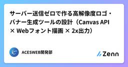
サーバー送信ゼロで作る高解像度ロゴ・バナー生成ツールの設計（Canvas API × Webフォント描画 × 2x出力）
Zennの「frontend」のフィード
Webサイト制作の現場では、ちょっとしたロゴやOGP画像・YouTubeサムネイルをサッと用意したい場面が頻繁にあります。一方で、外部の画像生成サービスを使うと「アカウント登録が面倒」「未公開の写真を外部サーバーにアップロードしたくない」という心理的ハードルが生まれがちです。 そこで、バックエンド処理を一切持たず、ブラウザ内の Canvas API だけで完結するロゴ・バナー生成ツールを設計・実装しました。 この記事では、完全クライアントサイドで実用レベルの画像生成ツールを作る際に直面した4つの技術的なハマりどころと設計判断を共有します。 Webフォントの読み込み完了前にCanvasへ描...
18時間前
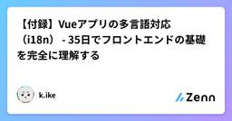
【付録】Vueアプリの多言語対応（i18n） - 35日でフロントエンドの基礎を完全に理解する
Zennの「frontend」のフィード
35日シリーズ（フロントエンド編）の付録です。本編を完走した人が実務で早い段階に出会うテーマとして、アプリの多言語対応（i18n）を扱います。 「このアプリ、海外拠点でも使いたいんだけど」。この一言が来た日、画面の文章をコンポーネントに直書きしているアプリは詰みます。逆に、最初から文章を「辞書」に分けて作ってあるアプリは、翻訳ファイルを1つ足すだけで済みます。その分かれ目が今回の主役です。 この記事を終えると以下ができるようになります。 文章の直書きがなぜ多言語化を不可能にするのか、辞書とロケールの仕組みでどう解決するのかを説明できる 語順・複数形・日付や数値の書式のように「訳す」だけで...
18時間前
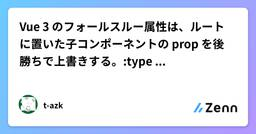
Vue 3 のフォールスルー属性は、ルートに置いた子コンポーネントの prop を後勝ちで上書きする。:type を書いても負ける
Zennの「frontend」のフィード
入力欄を包む部品がルートに子コンポーネントを描くと、親から来た type="datetime-local" が子の type prop に入り、テンプレートの :type="'datetime'" が負ける。日時が 2026-07-28T19:04 のまま出て、警告は無い フォールスルー属性（包む部品が prop として宣言していない属性）はルートに最後にマージされ、ルートの部品に同じ名前の prop があればその値になる 包む部品に inheritAttrs: false を置き、子へ渡すものを自分で書く。class と style も明示で渡す vue 3.5.46 / vitest...
20時間前
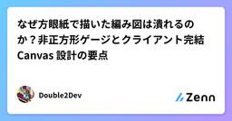
なぜ方眼紙で描いた編み図は潰れるのか？非正方形ゲージとクライアント完結 Canvas 設計の要点 1
1
Zennの「frontend」のフィード
編み込み模様を自分で描こうとしたとき、方眼紙や汎用ドット絵ツール（1:1 ピクセル）を使うと、いざ編んだときに模様が縦に潰れて見える現象が起きます。 原因はシンプルで、棒針のメリヤス編みは1目が正方形ではないためです。10cm あたり 20目 × 26段という標準的なゲージでは、1目の幅と高さの比率はおよそ 1 : 0.77（近似的に 4:5）になります。画面上のグリッドがこの比率を無視している限り、どれだけ丁寧に描いても実物とのズレは避けられません。 この問題を Web アプリで素直に解いている例として、非正方形ゲージとV字編み地プレビューを備えたブラウザ完結ツール の設計を見てみると...
1日前

横スクロールが数px出るときの4つの原因。body に overflow-x: hidden を当てる前に測る
Zennの「frontend」のフィード
横スクロールが数px出るとき、body { overflow-x: hidden } は効きますが原因を隠すだけです。1ページを調べたら、原因は4種類ありました。どれも個別に直せて、見た目も変わりませんでした。 症状が「どの画面幅でも同じ数pxだけ右にスクロールできる」なら、その値が手がかりになります。画面幅によらず一定なら、ほぼスクロールバーの幅です。 目視では数pxのはみ出しを見つけられないので、数値で判定します。 scrollWidth === clientWidth になるまで直します。幅は1つでは足りません。私は 390 / 768 / 1024 / 1280 / 1440px...
1日前
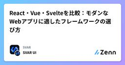
React・Vue・Svelteを比較：モダンなWebアプリに適したフレームワークの選び方
Zennの「frontend」のフィード
2026年現在、React、Vue、SvelteはいずれもモダンなWebアプリケーション開発で広く使われているフレームワークです。それぞれ異なる設計思想を持ち、開発体験、パフォーマンス、エコシステム、長期的な保守性にも違いがあります。 フレームワークの選定では、単純な人気やベンチマークの数値だけでなく、プロジェクトの要件、チームの経験、必要なライブラリ、将来的な保守コストを考慮する必要があります。 React、Vue、Svelteの設計思想や実践的な選び方については、Zennでも次のような比較記事が公開されています。 Frontend Frameworkの設計思想比較：React / V...
2日前

冬のボーナス手取り計算をTypeScript実装して分かった「前月給与で税率が跳ぶ」仕組みと厚生年金150万円上限
Zennの「frontend」のフィード
12月の冬のボーナス支給シーズンに合わせて、給与・税金計算ツール（kyuyolab）の賞与計算エンジン calcBonus() と、30万円〜200万円の金額別検証ページを TypeScript で実装しました。 実際に国税庁の「賞与に対する源泉徴収税額の算出率の表」や協会けんぽ・日本年金機構の一次資料を見ながらコードを書いてみると、「普段の月給の感覚とまったく違う」仕様がいくつもありました。 この記事では、純フロントエンド実装で分かったボーナス手取りの仕組みを TypeScript コードと実測値付きで整理します。 一番勘違いされやすいポイントです。ボーナスの源泉徴収税率は、ボーナスが...
2日前

なぜQRコードは中央をロゴで潰しても読めるのか？誤り訂正レベルHの仕組みとCanvas 2DデザインQR・SVG出力の実装
Zennの「frontend」のフィード
街中やWeb上で見かけるデザインQRコードには、中央に企業ロゴやSNSアイコンが配置されていたり、ドット（モジュール）が角丸・円・ハート型になっていたり、美しいグラデーションがかかっているものがあります。 一方で、見よう見まねでQRコードの上に画像を合成したり色を反転させたりすると、「iPhoneの標準カメラでは読めるのに、Androidや専用スキャナーだと全く読めない」 という事故が頻繁に起きます。 本記事では、ブラウザ完結のQR作成・スキャン環境 『QRコード Studio』 を開発する中で実装した、「あらゆるリーダーでの読み取り精度を維持したまま、Canvas 2D / SVG で...
2日前

Vue・React・Angular を比べる:概要と特徴、同じ部品のサンプルコード
Zennの「frontend」のフィード
筆算エンジンの画面を、Vue・React・Angular の 3 つで作り比べる予定です。業務では Vue がメインなので、作り始める前に、3 つの違いを整理しました。 この記事のバージョンは、2026 年 11 月時点のものです。 Vue 3.5(3.6 は RC) React 19.3 Angular 22 いちばん大きな違いは、最初から何が入っているか です。Angular は一式がそろっていて、React は画面の部品だけを受け持ちます。Vue はその間で、必要なものを公式のライブラリから足していきます。 HTML に近いテンプレートで書ける。HTML と CSS がわかれば読み...
3日前
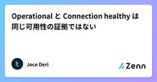
Operational と Connection healthy は同じ可用性の証拠ではない
Zennの「frontend」のフィード
この記事は、公開 UI を外から観察したデザインメモです。ソースコード、非公開のアーキテクチャ、内部ベンチマーク、本番の内部状態にはアクセスしていません。図と型定義は議論用の提案であり、実装の再現ではありません。 チームで「先方が落ちた」と話すとき、手元の画面と、第三者ページのラベルは別の層を指しがちです。異なる測定カバー率のラベルを、同じ「生きている」として読んでしまうことが問題です。 GetStatus AI のホームページは、Website status, outages, and performance in one place と掲げ、多数のサービスを一覧します。表示される件数...
3日前

impeccable スキルを入れる前に読む: 「無難なデザイン」をやめさせる仕組みと運用上の注意点
Zennの「frontend」のフィード
開示: この記事は Skillselion（Claude Code・Codex・Cursor 向け拡張機能をインストール数で並べる独立系ディレクトリ）の運営チームが書いています。Paul Bakaus 氏、Anthropic、OpenAI、Cursor のいずれとも提携していません。引用はすべて pbakaus/impeccable のコミット b49177d（2026年11月25日時点の main の先頭）から取っています。ベンチマークは実施していません。 社内ツールの設定画面を Claude Code に作らせたら、なぜか LP のようなヒーローセクションと大きなグラデーションが付い...
3日前

画像プレビューの差し替えでBlob URLを解放するタイミング
Zennの「frontend」のフィード
画像を選び直せるプレビューを作ると、見た目は一枚でも、内部では複数のBlob URLを作っていることがあります。短い操作では気づきにくいので、生成したURLの持ち主と解放する条件を最初に決めておくと追いやすくなります。 ファイルを受け取ったらプレビュー用のURLを作り、現在表示中のものとして保持します。次のファイルへ切り替える場合は、新しい画像の準備と、古いURLの解放を別の操作として扱います。画面が切り替わった事実だけで、古い参照が不要になったとは限りません。 たとえばhow to make a transparent pngのような透過画像を作る作業を考えると、入力画像、処理結果、ダ...
3日前
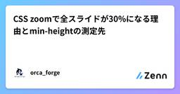
CSS zoomで全スライドが30%になる理由とmin-heightの測定先
Zennの「frontend」のフィード
📝 この記事は forge.workstyle.tech に掲載した記事の転載です。 判定用の箱がmin-heightで画面の高さまで伸びていると、中身を縮めても箱の高さは変わりません。その箱のscrollHeightとclientHeightを比較すると、倍率を変えても「収まらない」という判定が続くことがあります。今回の修正では、中身のmin-heightを一度0にしてoffsetHeightを測り、判定後に元へ戻しました。 CSSのzoomで全スライドが30%まで縮んだ原因は、判定用の箱に画面高のmin-heightが設定されていたことでした。箱の高さを測ると、倍率を変えても「収まら...
4日前
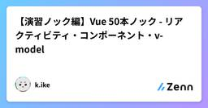
【演習ノック編】Vue 50本ノック - リアクティビティ・コンポーネント・v-model
Zennの「frontend」のフィード
35日シリーズ（フロントエンド編）の演習編、第2弾です。第1弾の JavaScript/TypeScript 50本ノックが言語の素振りだったのに対し、今回は Vue そのものを素振りします。本編の #6〜#12（Vue基礎のパート）まで終えてから取り組んでください。 ref と computed の説明を読んで「分かった」と思っても、白紙の App.vue を前にすると手が止まる。これはフレームワーク学習で必ず通る段階です。読んで分かる知識と、手が勝手に動く知識は別物で、後者に変えるには回数を打つしかありません。姉妹シリーズのバックエンド編で SQL や Go の50本ノックを挟んだの...
4日前
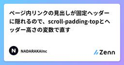
ページ内リンクの見出しが固定ヘッダーに隠れるので、scroll-padding-topとヘッダー高さの変数で直す
Zennの「frontend」のフィード
コーポレートサイトで「よくある質問」や「アクセス」へのページ内リンクを置くと、次のような報告を受けることがあります。 ヘッダーをposition: sticky（またはfixed）で画面上部に固定していると、ブラウザーはリンク先の見出しをビューポートの一番上へスクロールします。その一番上には固定ヘッダーが重なっているため、見出しがちょうどヘッダーの裏に入ります。 古い対処として、見出しの前に空の要素を置いて負のマージンでずらす方法や、JavaScriptでクリックを横取りしてwindow.scrollTo()で位置を計算する方法があります。いまはCSSのscroll-padding-to...
4日前
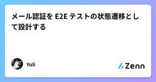
メール認証を E2E テストの状態遷移として設計する
Zennの「frontend」のフィード
本稿は公開されている画面・説明を手掛かりにしたテスト設計の提案であり、特定サービスの内部実装、配信基盤、性能、SDK の挙動を示すものではない。メール認証を E2E で扱うとき、受信箱を「外部の画面」ではなく、状態遷移の観測点にする。 共有アドレスを使うと、並列実行した別シナリオのメール、前回のリンク、運用通知が同じ場所に混ざる。「最新のメール」を取得する実装は、たまたま成功した別のメールを選ぶ余地を持つ。 TempMail AI のような一時的な受信先を使う場合も、目的は単にアドレスを増やすことではない。1 シナリオに 1 受信箱を対応させ、どの入力がどの観測結果につながったかを追える...
5日前
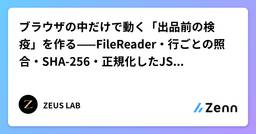
ブラウザの中だけで動く「出品前の検疫」を作る——FileReader・行ごとの照合・SHA-256・正規化したJSONの検査値
Zennの「frontend」のフィード
作品のファイルを受け取って検査する窓口を作ろうとすると、ふつうはサーバーにファイルを上げてもらう形になります。けれど、作り手の側から見ると、まだ売っていない作品を知らない場所に送るのは気が進みません。 そこで、検査をすべて開いているタブの中で行い、検査するファイルを送信する処理を持たない窓口を作りました。この記事は、その作りを4つの部品に分けて書いたものです。コードは実際にページで動いているものを、説明のために少し削っています。 かドロップで受け取ったファイルを、FileReader でバイト列として読みます。ここで通信は起きません。 一度に読むの...
6日前

無料サーバーのチャットボット、初回の遅さを「準備中」表示と自動再試行でしのぐ
Zennの「frontend」のフィード
小さなお店向けに、よくある質問に答えるチャットボットを作っています。お試し段階では、バックエンドを無料プランのサーバーで動かしています。 無料プランのサーバーは、しばらく使われないと止まり、次のアクセスで起動し直すものがあります（使っているサービス：claude-api）。このとき、最初の1回だけ応答が数十秒かかることがあります。デモを公開するにあたって、ここをどうするかを考えました。 この記事では、次の2つを書きます。 画面側で「準備中」を出し、起動中のエラーは自動で再試行するようにしたこと サーバーを起こしておくための定期アクセスを作ったものの、やめたこと（GitHub Action...
6日前